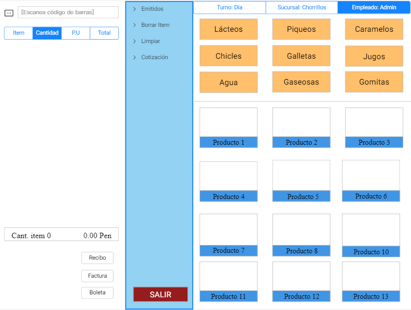

Sistema de punto de venta

- 
¡Bienvenidos a nuestro sitio web! Nos alegra que estés aquí. En esta página encontrarás toda la información que necesitas para aprovechar al máximo nuestros servicios y recursos.
Nuestro software de punto de venta está diseñado para ayudar a los pequeños negocios a gestionar sus operaciones de manera eficiente y efectiva. Explora y descubre cómo podemos ayudarte a crecer.
Gracias por visitarnos. Esperamos que encuentres todo lo que buscas en nuestra plataforma. No dudes en contactarnos si necesitas más información. Estamos aquí para ayudarte a llevar tu negocio al siguiente nivel.
Nuestra interfaz intuitiva y fácil de usar permite a los empleados de cualquier nivel de experiencia manejar las transacciones con rapidez y eficiencia.
Implementamos las últimas tecnologías en seguridad para proteger los datos de tu negocio y tus clientes, asegurando que toda la información se mantenga confidencial y segura.
Obtén reportes detallados en tiempo real sobre ventas, inventarios y rendimiento del personal, lo que te permite tomar decisiones informadas rápidamente.
Ofrecemos soporte técnico 24/7 para asegurarnos de que tu sistema esté siempre operativo y puedas recibir ayuda cuando la necesites.

"El software de punto de venta ha transformado completamente nuestra manera de operar. Es increíblemente fácil de usar y ha mejorado la eficiencia de nuestro negocio. Ahora podemos manejar nuestras ventas y el inventario con mucha más precisión. ¡Altamente recomendable!"

"Desde que implementamos este sistema, hemos visto una notable mejora en la velocidad y precisión de nuestras transacciones. La seguridad avanzada nos da la tranquilidad de que nuestros datos están protegidos. El soporte 24/7 es excepcional y siempre están disponibles para ayudarnos."

"Estamos encantados con este software de punto de venta. Los reportes en tiempo real nos han permitido tomar decisiones informadas rápidamente. Además, el equipo de soporte es increíblemente útil y siempre está disponible cuando los necesitamos. ¡Una inversión que vale cada centavo!"